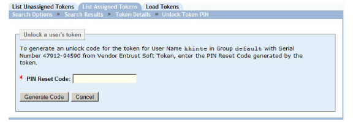
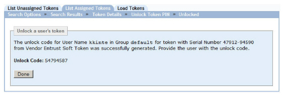

|
IdentityGuard Server 11.0 Administration Guide |
|
IdentityGuard Server 11.0 Administration Guide |
If you have Entrust IdentityGuard Self-Service Module, users can perform this action themselves.
This procedure describes how to unlock a PIN-protected hardware token using the Administration interface.
A token may be configured with a token PIN, in which case the user must enter the PIN to unlock the token before entering the challenge (in the case of challenge-response tokens) or get the token response (for response-only tokens). If the user enters the wrong token PIN repeatedly, the token will be locked, and the token displays an unlock challenge.
Use the following procedure to generate the unlock code (also known as a PIN reset code) for the user to use to unlock the token.
1. Log in to the Entrust IdentityGuard Administration interface as the administrator.
 On the
Windows computer where Entrust IdentityGuard is installed
On the
Windows computer where Entrust IdentityGuard is installed
2. Locate the token to unlock in one of two ways:
● Find a user’s token (see Find assigned token information)
● Find an assigned token (see To search for assigned token information )
3. Click Unlock Token PIN.
The Unlock a user’s token page appears.

4. Have the user generate a PIN reset code.
To generate a PIN reset code on a hardware token, the user clicks the token button after the locked message appears. The token generates the code. This number cannot be used for authentication.
To generate a PIN reset code on a soft token, the user selects the Unlock button on the Application Locked screen in the soft token application.
5. Enter the number in the PIN Reset Code field.
6. Click Generate Code.
The page displays an unlock code.

7. Communicate the unlock code to the user.
The user must enter this number into the token. After the code is validated, the user is prompted by the token device to enter a new token PIN.
8. Click Done.